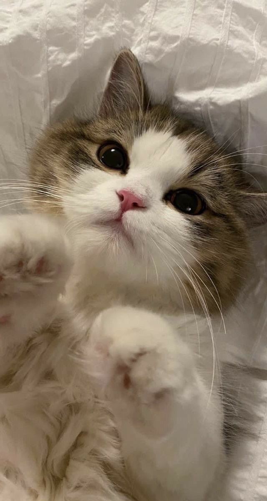

O gato é um animal que causa bastante curiosidade. Seja pelo misticismo criado em torno dele ou pela personalidade um tanto enigmática. Por serem animais mais reservados, muitos acreditam que os gatos não são companheiros ou que não gostam de brincar. Esse é um dos maiores erros de quem não tem contato com eles. Os gatos são sim animais independentes, mas também são extremamente sensíveis e companheiros. Algumas raças como a Maine Coon e o gato Siamês, por exemplo, são ideais para famílias com crianças.
Além das curiosidades, existe muita falta de conhecimento sobre esses animais como acreditar na lenda do gato preto ou que eles têm sete vidas. Essas inverdades prejudicam a integridade dos animais, já que muitos agem de maneira violenta com os gatos pretos e ignoram cuidados básicos com seus pets acreditando que eles são “super animais” e podem sobreviver a situações perigosas. 7 benefícios de ter um gato em casa:Reduz o risco de ataques cardíacos
Reduz o nível da ansiedade,para o sistema imunológico
Melhora o humor
Reduz o estresse
Auxilia no tratamento da depressão